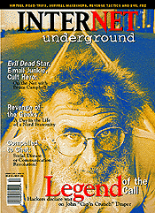

 issue 11 electric paper
October 1996
Featuring:
"Cereal Hacker"
by Steve Knopper
Legendary inspiration or washed-up has-been? John Draper, a.k.a. Cap'n Crunch, made a name for himself in the early '70s as one of the pioneer phone phreaks. Today he sleeps at a campground, can't get a job and finds himself the prey of a new generation of hackers.
"A Social Disease"
by Gloria Mitchell
Contrary to what you might have heard, the people whiling away the hours in chat rooms are not pathetic shut-ins. There's an entire vibrant universe out there composed of people who are literally addicted to socializing.
Top Ten:
Jim Bob says "Check 'em out."
"Love For Sale"
by Tommy Ranks
The world's oldest profession meets the world's newest technology as prostitutes shop for both clients and respect online.
"On the 'Net with... Bruce Campbell"
by Rob Bernstein
You might not recognize his name, but in the cinema cult underworld of the Net, Bruce Campbell is revered for his role in the Evil Dead trilogy. An avid Net junkie, Campbell gives the goods on a fan named Death Dog, a digital Jack Nicholson and Hollywood's fascination with stupid computer sound effects.
Departments:
Flamethrower:
Both sides of the Internet Service Provider censorship issue.
Weird on the Web:
Penultimate proof that anyone can publish on the Web.